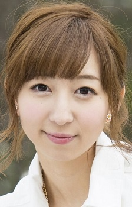
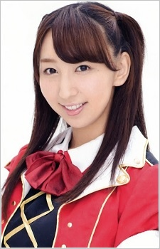
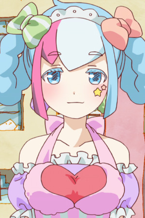

Riho Iida is a Japanese actress, voice actress, and singer. She voiced Rin Hoshizora from Love Live! School Idol Project.
- Gender: Female
- Birthday: October 26, 1991
- Birthplace: Saitama Prefecture, Japan

|

|
|---|
|  |
Riho Iida is a Japanese actress, voice actress, and singer. She voiced Rin Hoshizora from Love Live! School Idol Project.
|
 |
|---|
|  | Sayumin | Urahara | Sayumin is a light skinned and high-school aged girl. She sells crepes and help the girls when they need it. |